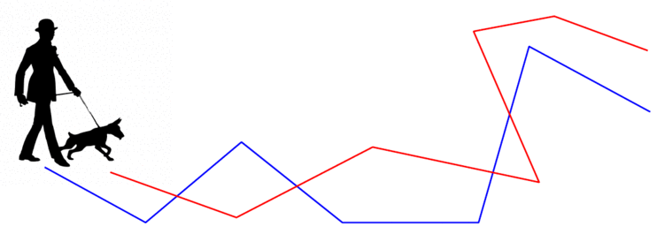

Fréchet Distance Library
The Fréchet distance is a useful and well known similarity measure for polygonal curves.
It is generally described as follows;
Consider a person and a dog connected by a leash, each walking along a different curve
from its starting point to its end point. Both are allowed to control
their speed but they are not allowed to backtrack. The Fréchet distance between
the two curves is the minimum length of a leash that is sufficient
for traversing both curves in this manner.

This page contains a (partial) summary of the different variants, results and applications of the Fréchet distance metric, which have been studied in the literature.
1 Continuous Fréchet distance
- The Fréchet distance was first defined by Maurice Fréchet (1878-1973) .
- Alt and Godau [AltG95] showed that the Fréchet distance between
two polygonal curves with n edges can be computed, using dynamic programming, in O(n2log n) time.
- Buchin et al. [BuchinBMS12] improved this bound and showed how to
compute the Fréchet distance in O(n2(log n)1/2(log log n)3/2) time on a pointer machine,
and in O(n2(log log n)2) time on a word RAM.
2 Discrete Fréchet distance
The discrete Fréchet distance is a simpler variant that arises when we
replace each of the input curves by a sequence of densely sampled points.
Intuitively, the discrete Fréchet distance replaces the curves by two sequences of points, and replaces the person and the dog by
two frogs. At each move, the frogs can jump from their current point to the next. The frogs are not allowed to backtrack. We are interested
in the minimum length of a leash that connects the frogs and allows them to traverse both curves in this manner.
The resulting discrete distance is considered as a good approximation of the actual continuous distance.
- Eiter and Mannila [EiterM94] showed that the discrete Fréchet distance between
two polygonal curves with n edges can be computed, using dynamic programming, in O(n2) time.
- Jiang et al. [JiangXZ08] successfully applied the discrete Fréchet distance for aligning the backbones of proteins,
which are represented as chains of atoms in 2D or 3D. In this application, the discrete variant makes more sense
than the continuous because matching points that does not represent atoms is false biologically.
- Agarwal et al. [AgarwalAKS14] showed how to compute the discrete Fréchet distance in slightly subquadratic time.
3 Hardness results
- Bringmann [Bringmann14] showed that the (discrete and continuous)
Fréchet distance has no strongly subquadratic algorithms unless SETH fails. He also showed that there is no strongly
subquadratic 1.001-approximation algorithm unless SETH' fails.
4 Variants of Fréchet distance
4.1 Fréchet distance with shortcuts
- Driemel and Har-Peled: Jaywalking your dog: Computing the Fréchet distance with shortcuts.
- Ben Avraham et al.: The discrete Fréchet distance with shortcuts via approximate distance counting and selection.
- Buchin et al. Computing the Fréchet distance with shortcuts is NP-hard.
4.2 Weak Fréchet distance
- Alt and Godau: Computing the Fréchet distance between two polygonal curves.
- Har-Peled and Raichel: The Fréchet distance revisited and extended.
4.3 Average and summed Fréchet distance
- Brakatsoulas et al.: On map-matching vehicle tracking data, 2005.
- Efrat et al.: Curve matching, time warping, and light fields: New algorithms for computing similarity between curves, 2007.
4.4 Fréchet distance with speed limits
4.5 Locally Correct Fréchet Matchings
4.6 Fréchet distance with imprecise input
4.7 Fréchet distance of a set of curves
- Dumitrescu and Rote: On the Fréchet distance of a set of curves, 2004.
- Har-Peled and Raichel: The Fréchet distance revisited and extended, 2011.
4.8 Fréchet gap
- Filtser and Katz presented the discrete Fréchet gap.
- Fan and Raichel considered the continuous Fréchet gap.
5 Fréchet distance in different metric spaces
5.1 Homotopic Fréchet distance
- Chambers et al.
Homotopic Fréchet distance between curves or, walking your dog in the woods in polynomial time, 2010.
5.2 Geodesic Fréchet distance
- Cook and Wenk: Geodesic Fréchet distance inside a simple polygon, 2008.
6 Fréchet distance for realistic curves
- Alt et al.: Comparison of distance measures for planar curves, 2003.
- Driemel et al.: Approximating the Fréchet distance for realistic curves in near linear time.
- Rote: Computing the Fréchet distance between piecewise smooth curves, 2007.
- Aronov et al.: Fréchet distance for curves, revisited.
7 Fréchet distance under transformations
- Alt et al. [AltKW01] showed an O((mn)3(m+n)2 log(m+n)) time exact algorithm for Fréchet
Distance under translations, and a (1+ε)-approximation algorithm for the problem in O(mn ε-2) time.
- Wenk [Wenk02] considered the problem of minimizing the Fréchet distance under transformations in high dimensions.
For transformations in dimension d and k degrees of freedom, an O((m+n)3k+2log(m+n)) time algorithm is presented. For example, the running time for Fréchet under
translations in d dimensions is O((m+n)3d+2log(m+n)).
- Mosig and Clausen [MosigC05] consider a decision version of the discrete problem, for various transformation groups.
Given two curves P,Q and a parameter ε, if there exists a transformation T s.t. the Fréchet distance between T(P) and Q is at most ε,
their algorithm returns a transformation T' s.t. the distance between T'(P) and Q is at most 2ε. If there is no transformation T s.t. the Fréchet
distance between T(P) and Q is at most 2ε, the algorithm returns false. Otherwise, the algorithm can return false or a a transformation T' s.t. the
distance between T'(P) and Q is at most 2ε. The transformation can be scaling, rotation, translation and rotation, or translation and scaling.
The running time is O(n2m2). They also consider the partial Fréchet disance, and Fréchet distance for closed curves.
- Jiang et al. [JiangXZ08] considered the problem of minimizing the discrete Fréchet distance between two 2D polygonal
chains under translation and rotation. For translation only, they presented an O(m3n3log(1/ε)) time (1 + ε)-approximation algorithm and an
O(m3n3log(m + n)) time exact algorithm. For translation and rotation, they presented an O(m4n4log(1/ε)) time
(1 + ε)-approximation algorithm and an O(m4n4log(m + n)) time exact algorithm.
- Ben Avraham et al. [AvrahamKS15] considered the problem of minimizing the discrete Fréchet distance between two 2D polygonal
chains under translations, and presented a faster exact algorthim for the problem, which runs in O(m3n2(1 + log(n/m)) log(m + n)) time.
- Filtser and Katz considered other variants of the discrete Fréchet distance under translations: the discrete Fréchet distance with shortcuts, the weak discrete Fréchet distance, and curves in 1D.
8 Applications of Fréchet distance
8.1 Chain simplification
- Agarwal et al.: Near-linear time approximation algorithms for curve simplification.
- Bereg et al.: Simplifying 3d polygonal chains under the discrete Fréchet distance.
- Dorrigiv et al.: Finding a hausdorff core of a polygon: On convex polygon containment with bounded hausdorff distance.
- Wylie and Zhu: Protein chain pair simplification under the discrete Fréchet distance.
- Fan et al. [FanFKWZ15] showed that the chain pair simplification problem is in P.
- Fan et al. considered the general chain pair simplification problem.
8.2 Nearest neighbour search
8.3 Clustering curves
8.4 Mean and median curve
- Buchin et al.: Median trajectories, 2013.
8.5 Matching
- Alt et al.: Matching planar maps, 2003.
- Brakatsoulas et al.: On map-matching vehicle tracking data, 2005.
- Chen et al.: Approximate map matching with respect to the Fréchet distance, 2011.
8.6 Voronoi diagram
- Bereg et al.: Voronoi Diagram of Polygonal Chains Under the Discrete Fréchet Distance, 2007.
8.7 Partial curve similarity under the Fréchet distance
- Alt and Godau: Computing the Fréchet distance between two polygonal curves.
- Buchin et al.: Exact algorithms for partial curve matching via the Fréchet distance, 2009.
- De Carufel et al.: Similarity of Polygonal Curves in the Presence of Outliers, 2012.
- Driemel and Har-Peled: Jaywalking your dog: Computing the Fréchet distance with shortcuts, 2013.